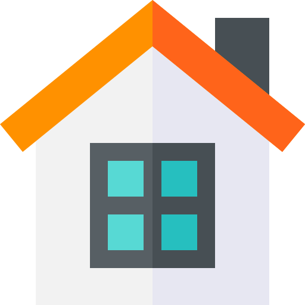

CAPÍTULO 01
Início
Use esta página como ponto de partida para acompanhar o dia e iniciar ações comuns.
Como navegar
- Na barra lateral, selecione Início. A área principal reúne cartões de resumo.
- Leia o Resumo de Tarefas e percorra atualizações, tarefas recentes e próximos eventos. Use os comandos “Ver todas” para abrir a lista completa daquele recurso.
- Em Links rápidos, abra os serviços disponíveis, como Setor pessoal, Reserva de sala, Suporte de TI e Políticas internas.
- Use o botão de criação rápida no cabeçalho para iniciar uma tarefa, publicação ou evento.
- Na seção Seus painéis, selecione “Gerenciar painéis” para abrir Meu Espaço e personalizar os cartões.
O que você encontra
- Últimas atualizações do Mural e atalhos para conversas, pessoas e documentos.
- Cartões que resumem dados recentes das áreas de trabalho.
- Links rápidos que podem depender do acesso habilitado para sua conta.
Dica: os cartões da página inicial são uma visão resumida. Para editar um item ou ver todos os registros, abra a área correspondente pelo menu lateral ou pelo link “Ver todas”.